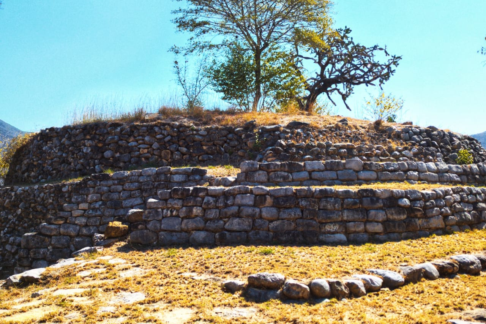

Humedad: %
Un Pueblo Mágico lleno de maravillas
Descubre la magia de Jalpan de Serra, un Pueblo Mágico en el corazón de la Sierra Gorda de Querétaro. Historia, naturaleza y gastronomía te esperan en esta joya escondida.
¡Jalpan es increíble! Las cabañas son súper acogedoras y la comida local es deliciosa. Recomiendo visitar las misiones.
El senderismo en la Sierra Gorda fue una experiencia única. Los guías turísticos saben mucho y te llevan a lugares espectaculares.
Probé el zacahuil en un restaurante local y fue lo mejor. También disfruté el paseo en lancha.